Enabling High-Performance and Secure Userspace NVM File Systems with the Trio Architecture
This page was written by an AI model to give a high-level overview of the paper. Please check the paper for detail: ACM Digital Library.
Non-volatile memory (NVM) sits on the memory bus and can be read and written with ordinary load and store instructions, which lets a userspace library file system (LibFS) linked into an application access storage directly, without trapping into the kernel on every operation. A LibFS can also be customized per application, since no special privilege is needed to change code that runs in the application's own address space. The problem is metadata integrity: if an application can write file system metadata (inodes, directory entries, block pointers) directly, a malicious or buggy application can corrupt metadata shared with other applications, and nothing stops it.
Existing userspace NVM file systems resolve this tension in one of two unsatisfying ways. Designs such as Aerie, Strata, and KucoFS route every metadata update through a trusted entity that validates and performs the update, which keeps metadata safe but adds IPC or context-switch cost to every metadata operation (ZoFS reports 44% overhead for 4KB appends and 68% for file creation under this approach), bakes the file system's data structures into the trusted entity, and therefore requires special privilege to customize. ZoFS instead lets LibFSes write metadata directly and only confines the damage to a group of NVM pages called a coffer, shared by all applications that use that LibFS; because the coffer and the LibFS state are shared, one application can still corrupt another's metadata through pointer manipulation, denial of service, or semantic violations such as deleting a non-empty directory.
Trio's key insight is that file system state splits naturally into core state, the ground truth that cannot be regenerated if lost (file contents, inodes, directory entries), and auxiliary state, anything that can be discarded and rebuilt from core state (in-memory caches, free-block bitmaps, lock structures, index trees). Trio defines a single, fixed layout for core state and shares it as common knowledge among all components, while letting each LibFS keep its own private, freely customizable auxiliary state built on top.
Concretely, Trio has three kinds of components: an in-kernel access controller that grants a LibFS access to a file's core state via the MMU, a per-application LibFS that directly reads and writes that core state and layers its own private auxiliary state and file system design on top, and a trusted userspace integrity verifier. A LibFS maps a file's core state and operates on it without involving any trusted entity; only when write access to a file is handed from one LibFS to another does the kernel controller invoke the verifier to check the file's core state, and only that one file, not the whole file system. If the check fails, the kernel controller repairs the file by rolling it back to a checkpoint.
The paper instantiates Trio with ArckFS, a generic POSIX-like file system, and two customizations built on ArckFS's core state: KVFS for small-file workloads and FPFS for deep directory hierarchies. On an eight-socket, 224-core Optane PM machine, ArckFS outperforms existing in-kernel and userspace NVM file systems (ext4, PMFS, NOVA, OdinFS, WineFS, SplitFS, Strata) by 3.1× to 17× on LevelDB and by up to two orders of magnitude on FxMark scalability microbenchmarks; KVFS and FPFS further outperform ArckFS by up to 1.3× on workloads matching their customization.
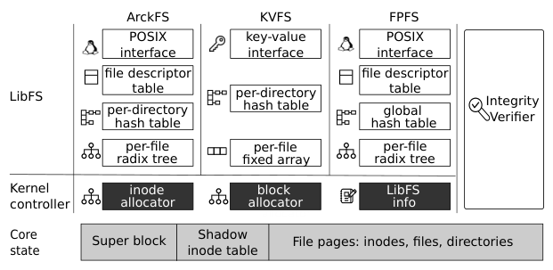
Key takeaways
- Userspace NVM file systems face a three-way tension: direct NVM access, unprivileged per-application customization, and metadata integrity. Prior designs achieve at most two of the three.
- Trio's fix is a state split: a single, shared core state layout (ground truth) versus private, freely customizable auxiliary state per LibFS (rebuildable from core state).
- Three components: an in-kernel access controller (grants MMU-enforced access to core state), per-application LibFSes (direct access plus custom auxiliary state), and a trusted integrity verifier (checks one file's core state only when write access changes hands).
- ArckFS, a generic POSIX-like LibFS on Trio, adds a minimal core-state design, per-CPU data structures, and Optane-aware opportunistic delegation for scalability.
- ArckFS beats existing NVM file systems by 3.1× to 17× on LevelDB and up to two orders of magnitude on scalability microbenchmarks; customized LibFSes (KVFS, FPFS) add a further 1.3×, with no change to the trusted entities.
From a three-way tension to a working file system
Why prior designs each give up one property, how Trio's state split resolves it, ArckFS's data structures, integrity enforcement, and customization.
1 · The property each prior design gives up
The paper's own summary table (its Table 1) scores four architectures on five properties.
| Property | In-kernel FS | Metadata update mediation | Direct access (ZoFS) | Trio |
|---|---|---|---|---|
| Direct data access | ✗ | ✓ | ✓ | ✓ |
| Direct metadata access | ✗ | ✗ | ✓ | ✓ |
| Unprivileged customization | ✗ | ✗ | ✓ | ✓ |
| Per-application customization | ✗ | ✗ | ✗ | ✓ |
| Metadata integrity | ✓ | ✓ | ✗ | ✓ |
Only Trio claims all five. Sections 2 and 3 of the paper work out why, and how.
2 · Why metadata update mediation is expensive and inflexible
Designs such as Aerie, Strata, SplitFS (for metadata), and KucoFS let a LibFS access data directly but route every metadata update through a trusted entity, in the kernel or a privileged process, which validates and performs the update. ZoFS measured this mediation at 44% overhead for 4KB file appends and 68% for file creation, due to IPC or context switches on every metadata operation; batching updates into a per-thread or shared log (as in Aerie and Strata) trades this for extra log writes, garbage collection, and either a single-log scalability bottleneck or a complex per-thread-log correctness argument. Because the trusted entity implements the metadata update logic itself, a LibFS's data structures are baked into that trusted code, so changing them needs elevated privilege and affects every application that shares the trusted entity.
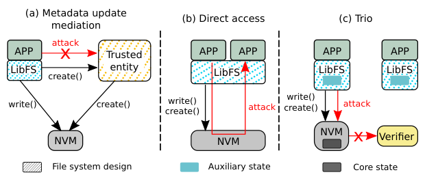
3 · Why ZoFS's direct access is insecure
ZoFS lets LibFSes write metadata directly and confines damage with a coffer, a group of NVM pages with one access permission, using Intel MPK to restrict a LibFS to one coffer at a time. But ZoFS couples a LibFS to a coffer rather than to a single application, so multiple applications share both the coffer and the LibFS's auxiliary state. The paper gives concrete attacks this enables: a malicious application can redirect index pointers so a victim's copy operation leaks or overwrites sensitive DRAM data, hold a LibFS lock forever (denial of service), or violate file system invariants directly, for example removing a non-empty directory, creating duplicate file names, or introducing a cycle in the directory hierarchy.
4 · The state split: core state versus auxiliary state
Core state is a file system's hard state: file contents and the minimum metadata needed for the file system abstraction (file names, permissions, the directory hierarchy). It must live in non-volatile storage because it cannot be regenerated if lost. Auxiliary state is everything else: file descriptors, locks, caches, free-space bitmaps, index structures, anything that can be discarded and rebuilt from core state, and that can live in DRAM. Trio fixes a single layout and data structure for core state and shares it as common knowledge among all LibFSes and the trusted entity; a LibFS cannot change the core state's structure, but owns its auxiliary state completely, so each application's customization stays private and never requires touching the trusted entity.
5 · Trio's three components and the sharing workflow
The kernel access controller tracks which shared resources (NVM pages, inodes) each LibFS may touch and grants access by programming the MMU; the trusted userspace integrity verifier checks one file's core state only at the moment write access to that file passes from one LibFS to another.
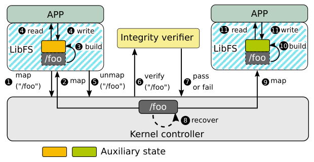
- A LibFS requests access to a file from the kernel controller.
- The kernel controller grants access to the file's core state by mapping the relevant NVM pages into the LibFS with the appropriate permission.
- The LibFS builds its private auxiliary state (indexes, locks) by walking the mapped core state.
- The LibFS directly reads and writes the file through its mapped core state and its auxiliary state, without involving any trusted entity.
- When the LibFS releases (unmaps) the file, the kernel controller sends it to the integrity verifier.
- If verification fails, the kernel controller handles the corruption (§7 below); otherwise the file is available again.
- A second LibFS can now be granted access to the file's (valid) core state, build its own auxiliary state, and access the file.
Trio only allows concurrent readers or one exclusive writer per file, so a LibFS never has to reason about another LibFS's live writes; it only ever sees a file either freshly granted (rebuild auxiliary state) or already held.
6 · ArckFS's core state: regular files and directories
ArckFS, the paper's generic POSIX-like LibFS on Trio, deliberately minimizes its core state: a superblock (file system-wide info, LibFS has read access), a shadow inode table (kernel-controller-only, used for permission enforcement), and file pages holding inodes and data for regular files and directories.
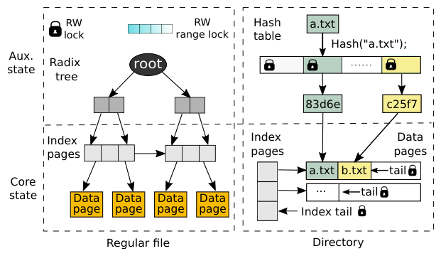
- Regular files are index pages (each entry points to a data page; the last entry chains to the next index page) plus data pages, so read, write, and truncate can all be done by a LibFS directly mapping and walking these pages.
- Directories are index and data pages of directory entries (inode number, file name, name length), so search, list, and stat can be done the same way; a LibFS resolves a path by mapping each directory along it.
- A file's inode is co-located with its directory entry, so stat, create, and delete (which need the parent directory's permission, not the file's) can also be handled by direct page mapping. This means ArckFS's core state has no "." or ".." entries; LibFSes maintain those in auxiliary state.
- Sensitive fields (access permission) are mirrored in the kernel-controller-only shadow inode table, which is treated as ground truth, since any application with directory write access could otherwise alter permissions in the regular inode.
7 · Enforcing metadata integrity on sharing
ArckFS's integrity verifier adapts e2fsck-style checks to run online and per-file instead of offline and global, which the paper says is feasible because ArckFS's core state is minimal. It enforces four invariants: (I1) every inode and directory-entry field is valid and internally consistent (valid file type, no duplicate names in a directory, no "/" in names); (I2) a file's inode and pages are either pre-existing or properly allocated, and never doubly referenced, checked against bookkeeping the kernel controller keeps of what is mapped or allocated to each LibFS; (I3) the directory hierarchy is a connected tree, checked by comparing against a checkpoint to find deleted child directories that must have no mapped LibFS and no remaining children (cycles are already ruled out by I2, since ArckFS has no hard links); (I4) access permission is correctly enforced, using the shadow inode table as ground truth.
If a check fails, ArckFS asks the offending LibFS to fix the corruption within a timeout; if it cannot, the kernel controller isolates the file as private to that LibFS (to avoid losing its data) and otherwise rolls the file's metadata back to the most recent checkpoint, trimming or zero-padding to reconcile any file-size mismatch. A LibFS can call commit to replace the checkpoint with validated current state, so the kernel controller will not revert further-back changes. This confines any corruption to the application that caused it. See the Evaluation tab for the fault-injection results.
8 · Crash consistency
Trio leaves the crash-consistency mechanism to each LibFS, which registers a recovery program with the kernel controller to run after a crash; since that program itself is untrusted, the integrity verifier re-checks every file that was writable at crash time after recovery runs. ArckFS's own LibFS makes metadata operations synchronous and atomic and data operations synchronous but not necessarily atomic, using 16-byte atomic NVM writes for most metadata operations (for example, marking a new directory entry invalid with inode number 0 until the real inode number is persisted last) and undo logging for more complex operations such as rename.
9 · Implementation and scaling on real Optane hardware
The kernel controller is a Linux 5.13.13 kernel module (3791 lines); the LibFS (7586 lines) borrows its radix-tree/hash-table design from ScaleFS; the integrity verifier (457 lines) is small because ArckFS's core state has few data structures to check. Allocators in both the kernel controller and the LibFS are per-CPU red-black trees, as in NOVA and WineFS, reimplemented in userspace since the prior designs are in-kernel.
Because excessive concurrent or remote-NUMA access degrades Optane PM performance, ArckFS adopts OdinFS's opportunistic delegation: a fixed set of background delegation threads per NUMA node perform the actual NVM access on behalf of application threads (which hand off requests via per-application ring buffers), always accessing local NVM and striping large transfers across NUMA nodes in parallel. Small accesses (reads under 32KB, writes under 256 bytes) bypass delegation, since the communication overhead would not be worth it.
Results from this design are covered in the Evaluation tab.
10 · Customization: KVFS and FPFS
Because file system design is solely the LibFS's responsibility, an application can swap in a differently designed LibFS over the same ArckFS core state without touching the kernel controller or verifier, and without affecting other applications.
- KVFS targets many-small-file workloads (email, HPC). It adds
get/setcalls that read or create-and-write a file from its start, eliminating file descriptors; it caps file size at 32KB and replaces ArckFS's radix tree with a fixed-size array; and since concurrent access to the same small file is rare, it replaces fine-grained locks with a single spinlock. - FPFS targets deep directory hierarchies. It replaces ArckFS's per-directory hash table with one global hash table mapping full paths directly to directory entries, eliminating per-directory traversal during path resolution.
- Customization is limited to auxiliary state; changing core state (for example, to support a conventional log-structured design) would need special privilege. Within that limit, ArckFS's minimal core state still permits customizing interfaces, caching, key data structures, concurrency control, and crash consistency.
Evaluation
What the paper measures, its key figures and tables as they appear in the paper, and what each one tells us.
All experiments run on a single eight-socket machine with 224-core Intel Xeon Platinum 8276L processors and 6144GB of Optane PM DIMMs, running Ubuntu 20.04 with Linux kernel 5.13.13. ArckFS is compared against five in-kernel NVM file systems and two userspace NVM file systems; the latter are the only userspace ones the authors could get running (ZoFS and KucoFS have no available source, and Aerie and ctFS could not be run with the provided configurations).
| What | Value in the paper |
|---|---|
| Platform | 8-socket, 224-core Intel Xeon Platinum 8276L, 6144GB Optane PM, Ubuntu 20.04, Linux 5.13.13 |
| Baselines | In-kernel: ext4 (DAX), PMFS, NOVA, OdinFS, WineFS. Userspace: SplitFS, Strata (metadata via ext4 / a privileged process respectively) |
| Microbenchmarks | fio (1GB private file per thread), FxMark (data and metadata scalability, Table 2) |
| Macrobenchmarks | Filebench: Fileserver, Webserver, Webproxy, Varmail (configs in Table 4); LevelDB db_bench (1 thread, 100B values, 1M objects) |
| Metrics | Throughput (GiB/s, ops/µs, KOps/sec), latency, LevelDB ops/ms |
Direct access wins at small granularity; opportunistic delegation wins at large granularity
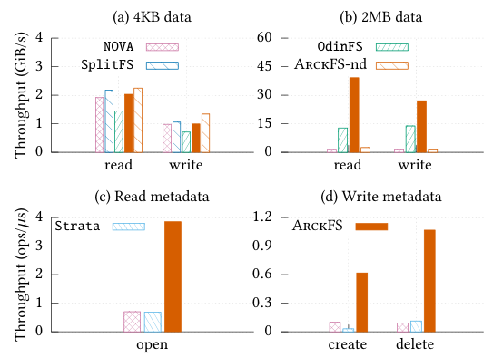
What it shows. Single-thread throughput/latency for 4KB and 2MB reads and writes, and for metadata operations (open, create, delete), comparing ArckFS (and ArckFS-no-dele, without opportunistic delegation) against NOVA, SplitFS, OdinFS (data), and Strata (metadata).
What to take from it. At 4KB, SplitFS and ArckFS-no-dele beat NOVA by 9% to 31% from direct access alone; delegation's striping/communication overhead makes full ArckFS 21% slower than ArckFS-no-dele, but it still beats NOVA by about 6%. At 2MB, data-copy time dominates and direct access barely matters, but OdinFS and ArckFS's opportunistic delegation parallelizes the copy, so ArckFS beats others by 3.1× to 25× (read) and 2.0× to 15× (write). For metadata, ArckFS's direct access plus data structure design (for example a hash table beating NOVA's radix tree) yields 1.6× to 5.6× (open), 3.3× to 5.3× (create), and 7.4× to 9.4× (delete) over the others; NOVA and Strata spend at least 42% and 44.5% of create time, respectively, in VFS and log digestion.
ArckFS and OdinFS are the only file systems that scale data throughput to 224 threads across 8 NUMA nodes
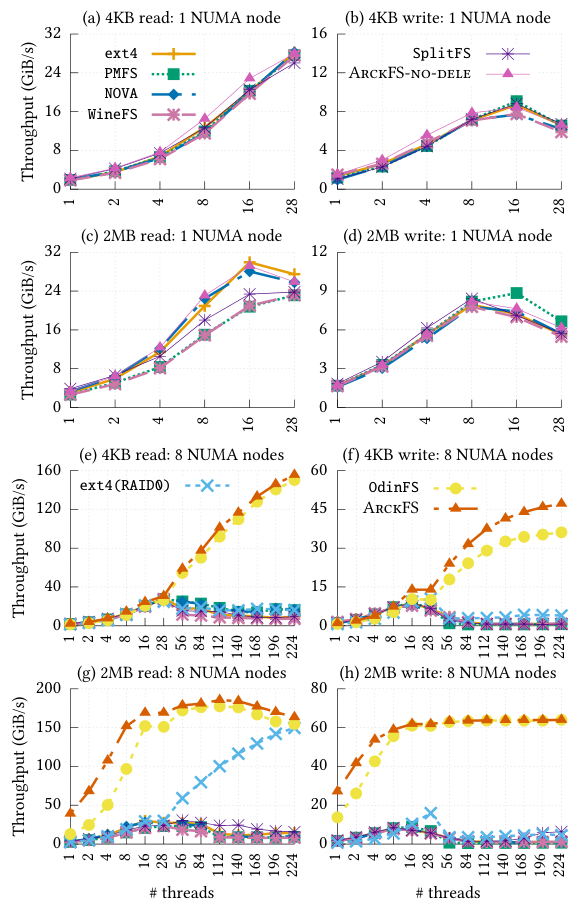
What it shows. fio throughput for 4KB and 2MB reads/writes, at one NUMA node and across eight NUMA nodes, from 1 to 224 threads, for all evaluated file systems including ext4(RAID0).
What to take from it. With one NUMA node all file systems perform similarly at 4KB and 2MB (throughput even drops from excessive concurrent Optane access); with eight NUMA nodes, OdinFS and ArckFS scale because of opportunistic delegation, while other file systems do not. At 224 threads ArckFS beats OdinFS by up to 1.3× (via direct access) and other file systems by up to 22× on 4KB operations, and beats all by 1.1× to 25× (2MB read) and up to 15× (2MB write). ext4(RAID0) scales 2MB-read somewhat since it lowers concurrent NVM access, but not 4KB-read, which hits a scalability bottleneck.
VFS, not NVM, is what stops other file systems from scaling metadata operations
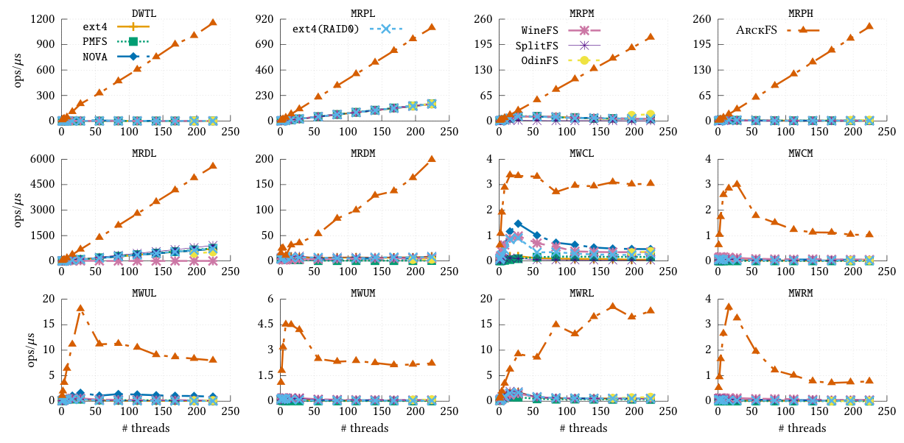
What it shows. FxMark metadata-microbenchmark throughput (see Table 2 for the benchmark definitions: open, enumerate, create, unlink, rename under private/shared/high-contention variants) from 1 to 224 threads.
What to take from it. Most other file systems scale only the least-contended variants (MRPL, MRDL) because of VFS-level bottlenecks (coarse locks on the directory/inode cache and a global rename lock). ArckFS bypasses VFS via direct access and uses scalable per-CPU structures and locks, scaling linearly on DWTL and all read-dominated workloads to 224 threads; it beats others by 5.4× to 334× (open-style workloads) and 7.4× to 25× (enumerate) at 224 threads. On write-heavy workloads it still outperforms by 2.3× to 21.2× (create), 8.9× to 32.7× (unlink), and 16.2× to 36.4× (rename), though it does not scale perfectly linearly there due to un-delegated small accesses (MWCL, MWUL) or contention on its directory hash tables and logging/index tails (MWCM, MWUM, MWRM). On data-operation scalability (figure omitted by the paper), ArckFS and OdinFS are again the main scalers, with ArckFS beating OdinFS by 3.2× and others by up to 850×.
The integrity verifier catches every injected corruption; sharing has a cost only when files or directories are large
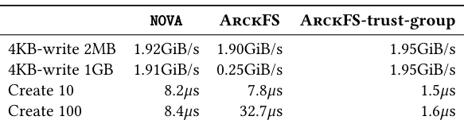
What it shows. A fault-injection study of 11 handcrafted malicious-LibFS attacks and automated single- and multi-field corruption scripts targeting each of the four integrity invariants (134 scenarios total), and Table 3's measurement of sharing cost: two threads concurrently 4KB-writing to a 2MB versus 1GB file, and concurrently creating files in a 10- versus 100-file directory, comparing NOVA, ArckFS, and ArckFS with a trust group.
What to take from it. In all 134 corruption scenarios the verifier detects the corruption and the kernel controller restores a consistent file. For sharing cost, small files/directories add negligible (under 5µs) to modest overhead and ArckFS matches NOVA; at 1GB, repeated map/unmap dominates (670ms per iteration on average, 99% of the overhead, amortized against ArckFS's 100ms lease into a 7.8× slowdown versus NOVA); at 100 files, the integrity verifier (300µs, 81% of overhead) and auxiliary-state rebuild (12%) dominate, a 20.4× slowdown. A trust group, which lets mutually trusting processes share a LibFS and skip the sharing machinery, eliminates this overhead entirely (Table 3, rightmost column).
ArckFS's advantage widens on workloads that mix data and metadata pressure
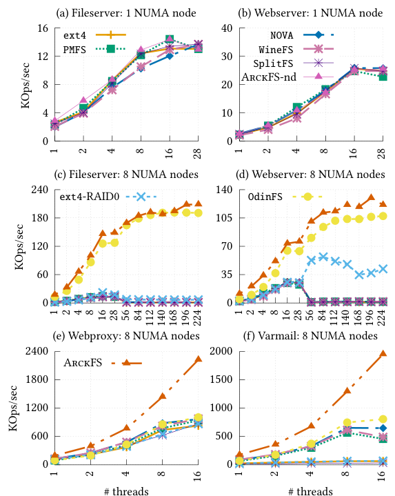
What it shows. Filebench throughput (KOps/sec) for Fileserver, Webserver, Webproxy, and Varmail (configurations in Table 4), at one and eight NUMA nodes, across the evaluated file systems; Webproxy and Varmail are capped at 16 threads due to a Filebench scalability bug the authors bypass with per-thread filesets.
What to take from it. On data-intensive Fileserver and Webserver, results track the fio findings: similar at one NUMA node, and at eight nodes ArckFS beats others by 1.1× to 27.3× (Fileserver) and 1.2× to 4.1× (Webserver). On the metadata- and small-file-heavy Webproxy and Varmail, where ArckFS's direct metadata path matters most, it beats others by 2.2× to 8.0× and 2.4× to 34.2× respectively.
ArckFS is the fastest mmap-capable file system for LevelDB across every db_bench workload
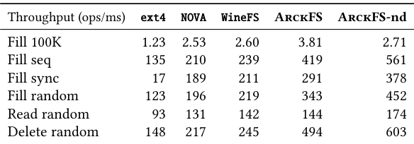
What it shows. Table 5: LevelDB db_bench throughput (ops/ms) for Fill 100K, Fill seq, Fill sync, Fill random, Read random, and Delete random, on ext4, NOVA, WineFS, ArckFS, and ArckFS-no-dele; other evaluated file systems are excluded because they lack a functional mmap(), and ext4(RAID0) is omitted because it always underperforms plain ext4.
What to take from it. ArckFS outperforms every file system on every workload, beating WineFS (the second-best) by up to 3.1× and ext4 by 1.5× to 17×. ArckFS-no-dele is 29% slower than ArckFS on Fill100K, which does large writes that benefit from delegation's parallel NVM access, but 21% to 34% faster on the other, mostly small-access workloads, where delegation's striping and communication overhead outweighs its benefit.
Unprivileged customization delivers a further, workload-specific speedup over the generic LibFS
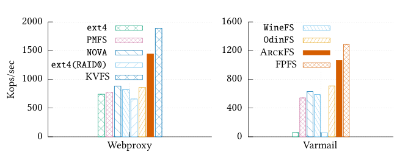
What it shows. Filebench Webproxy (extended with a key-value interface) and a Varmail variant with directory depth 20, both at eight threads, comparing KVFS and FPFS against ArckFS and the other baselines.
What to take from it. On Webproxy, KVFS's elimination of file descriptors and index structures for small files beats ArckFS by 1.3× and other file systems by 2.9×. On the deep-directory Varmail variant, FPFS's full-path indexing (no per-directory traversal) beats ArckFS by 1.2× and others by 21×. Both gains come without any change to the kernel controller or integrity verifier, which the paper contrasts with Aerie, where neither the no-special-privilege nor the no-cross-application-impact property could be achieved together.
FAQ
Q·Why is the architecture called "Trio"?▾
The paper names it after Beethoven's Piano Trio "Archduke" (hence also "ArckFS"), and structurally because it has three kinds of components: per-application LibFSes, an in-kernel access controller, and a trusted userspace integrity verifier.
Q·How is this different from SplitFS or other userspace NVM file systems people may already know?▾
SplitFS and similar designs let a LibFS access file data directly but still route metadata updates through a trusted entity (ext4 for SplitFS, a privileged process for Strata), which the paper shows costs 44% to 68% overhead on metadata operations and prevents unprivileged customization of metadata structures. Trio lets the LibFS access both data and metadata directly, by sharing a fixed core-state layout instead of mediating every update.
Q·What exactly is "core state" versus "auxiliary state"?▾
Core state is the file system's ground truth: file contents and the minimal metadata (names, permissions, directory structure) needed to reconstruct the file system abstraction; it must be on non-volatile storage since it cannot be regenerated if lost. Auxiliary state is anything that can be rebuilt from core state, such as caches, free-space bitmaps, and index trees; it can live in DRAM and each LibFS owns and customizes its own copy.
Q·Why can't the trusted entity just check each LibFS's own custom data structures?▾
Because customization means different LibFSes may use entirely different data structures (a hash table in ArckFS versus a fixed array in KVFS versus a global hash table in FPFS). Trio avoids this problem by having the trusted verifier only ever check the single, fixed core-state layout, which every LibFS, regardless of its customization, must build its auxiliary state from.
Q·What is a "coffer" in ZoFS, and why doesn't it actually protect applications from each other?▾
A coffer is a group of NVM pages that share one access permission; ZoFS uses Intel MPK to let a LibFS access only one coffer at a time, confining corruption to that coffer. But multiple applications can share a coffer and its LibFS's state, so one application can still corrupt another's metadata within the shared coffer, for example by redirecting index pointers or deleting a non-empty directory.
Q·When does the integrity verifier actually run?▾
Only when a file's write access is handed from one LibFS to another (on unmap/sharing), and it checks only that single file's core state, not the whole file system. This is unlike a full offline checker such as e2fsck, which the paper's verifier is adapted from but runs online and per-file instead.
Q·What happens if the verifier finds corruption?▾
ArckFS first asks the LibFS that caused it to fix the problem within a timeout. If it cannot, the kernel controller isolates the file as private to that LibFS to avoid losing data, then rolls the file's metadata back to its last checkpoint, reconciling any file-size mismatch by trimming or zero-padding. A LibFS can call commit to advance the checkpoint once its changes pass verification.
Q·What is a "trust group" and why does it matter?▾
A trust group is a set of processes belonging to the same user that mutually trust each other (for example, processes of the same application). Processes in a trust group can share a single LibFS and skip the mapping, unmapping, verification, and auxiliary-state rebuild that sharing across the trust boundary requires, which Table 3 shows eliminates the sharing overhead entirely.
Q·Why does ArckFS need "opportunistic delegation" instead of just letting every thread access NVM directly?▾
Because Optane PM performance degrades sharply under excessive concurrent access and remote-NUMA access. ArckFS borrows OdinFS's design: a fixed number of background delegation threads per NUMA node do the actual NVM access (always locally), and application threads hand off requests through per-application ring buffers, which avoids the performance collapse from unrestricted concurrent access and lets large transfers be striped across NUMA nodes in parallel.
Q·Can an application customize anything it wants in its LibFS?▾
No. Customization is limited to auxiliary state; the core-state layout is fixed and shared, so changing it would require special privilege (and would break the verifier's assumptions). Within that limit, the paper shows customization of interfaces, caching, key data structures, concurrency control, and crash consistency is still possible, as demonstrated by KVFS and FPFS.
Q·Is ArckFS fully POSIX-compliant?▾
No, the paper describes it as POSIX-like but not fully POSIX-compliant. It cannot support concurrent writes from multiple untrusted applications to the same file, the MMU cannot enforce a directory's search permission, and some timestamps (such as access time on a read-only file) cannot be precisely maintained. These are limitations Trio inherits from prior userspace NVM file system designs.
Q·Does Trio handle data corruption (as opposed to metadata corruption)?▾
The paper treats protecting data in regular files as orthogonal to Trio's design. Access permissions are enforced via the MMU as with a kernel file system, and the user is responsible for managing them against malicious users; protecting against unintentional corruption from bugs or hardware errors is left to whatever protection techniques a specific core-state design chooses to add.